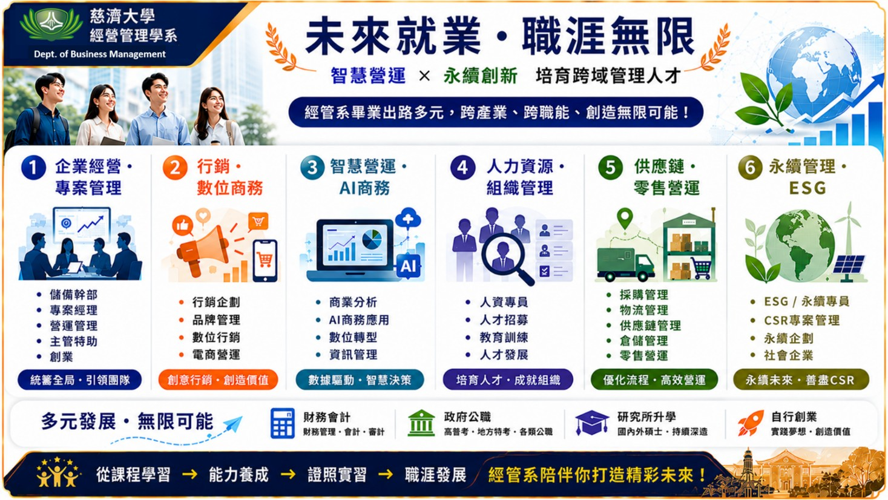

職涯地圖
連結課程與專業能力，探索行銷、物流、公務、會計、專案管理、人力資源及供應鏈等職務方向。
CAREER PROSPECTS
探索課程所培養的能力如何連結職涯方向、升學進修與持續發展。
連結課程與專業能力，探索行銷、物流、公務、會計、專案管理、人力資源及供應鏈等職務方向。
整理可延伸的進修方向、能力培養與專業資源。
以核實資料呈現升學與就業情形，避免重複維護數據。
舊版系網指出，畢業生可在國內企業及地方中小企業投入行銷、物流等工作，相關產業包括零售、觀光、休閒娛樂、餐旅、有機農業與海洋深層水；頁面亦列出靜思書軒、大愛科技等延伸參考單位。
政府主計單位、學校會計室、會計師事務所，以及企業會計主管等職務。
總經理特助兼專案管理、雲端專案管理、Google Street View 環景攝影等職務。
大型企業人力資源提升計畫講師等職務。
零售與企業營運中的採購管理、包裝及倉儲管理等職務。
以上職務與參考單位整理自舊版系網 Career Path 頁面；原頁未標示資料年度，僅供職涯方向參考，不代表最新就業比例、目前在職情形或現行招聘關係。
智慧營運 × 永續創新｜培育跨域管理人才
經管系畢業出路多元，可跨產業、跨職能發展，將課程學習轉化為專業能力與職涯選擇。

儲備幹部、專案經理、營運管理、主管特助、創業。
統籌全局・引領團隊行銷企劃、品牌管理、數位行銷、電商營運。
創意行銷・創造價值商業分析、AI 商務應用、數位轉型、資訊管理。
數據驅動・智慧決策人資專員、人才招募、教育訓練、人才發展。
培育人才・成就組織採購管理、物流管理、供應鏈管理、倉儲管理、零售營運。
優化流程・高效營運ESG／永續專員、CSR 專案管理、永續企劃、社會企業。
永續未來・普惠 CSR從課程學習 → 能力養成 → 證照實習 → 職涯發展｜經管系陪伴你打造精彩未來！
以上為圖示整理的可能職涯方向，實際職務與發展依個人專長、經驗及職涯選擇而異。